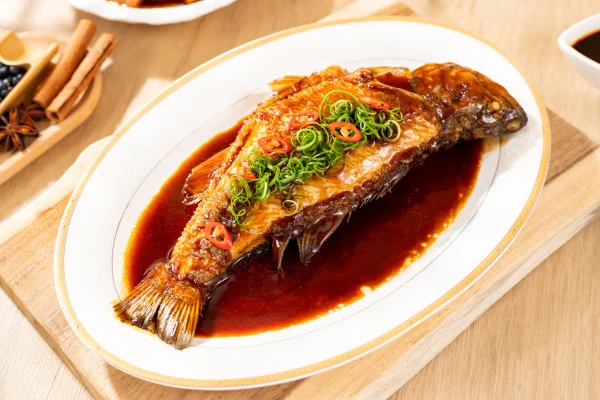
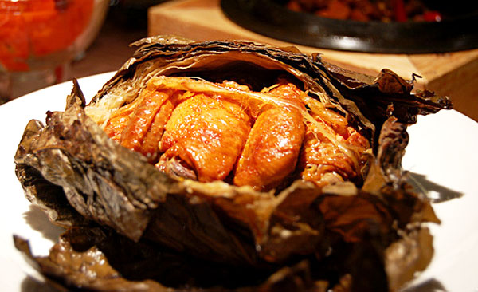

🍛 代表菜色介紹

西湖醋魚
西湖醋魚是杭州著名傳統名菜，選用草魚或鯇魚現殺現煮，魚肉滑嫩無腥。料理過程中不加油炸，保留魚的原鮮，最後淋上糖醋調製的芡汁，酸甜適口。據說此菜源自宋代，亦稱「宋嫂魚羹」，體現浙菜講究原味與清雅的特點。

龍井蝦仁
這道菜選用新鮮河蝦仁，先用蛋清與澱粉上漿，再與西湖名茶「龍井」茶葉同炒，蝦仁色澤潔白，茶香撲鼻，口感鮮嫩。整道菜不僅味道清爽，還充滿文人氣息，是杭幫菜中「茶文化入菜」的代表。

東坡肉
相傳此菜由北宋文豪蘇東坡在杭州任官時創製。選用五花肉，經過煸炒後加黃酒慢火燜煮數小時，肉色紅亮，肥而不膩。入口即化、香氣四溢，是浙菜中最具代表性與歷史故事性的菜色之一。

叫化雞
傳說由乞丐發明，後傳入宮廷。全雞先用香料醃製，內塞食材，再以荷葉、泥巴包裹，文火慢烤數小時。打開時香氣撲鼻，肉質軟嫩，充滿草本與泥土芳香，是一道極具江南文化色彩的創意名菜。